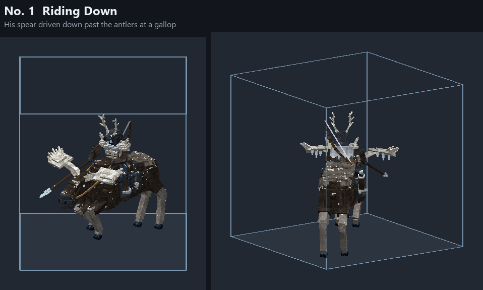
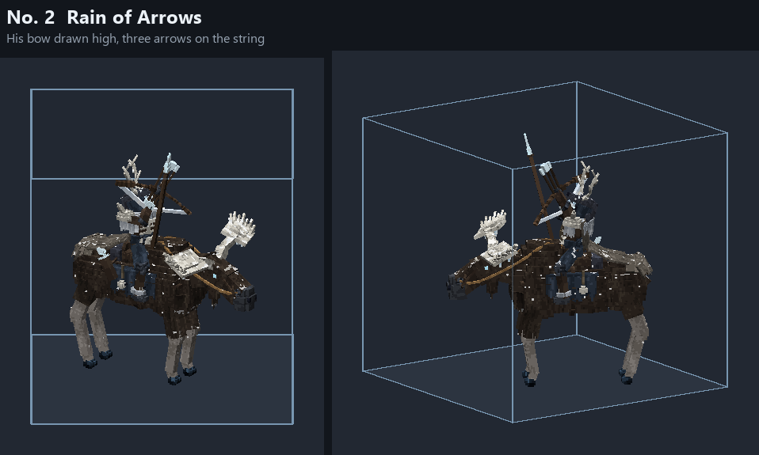
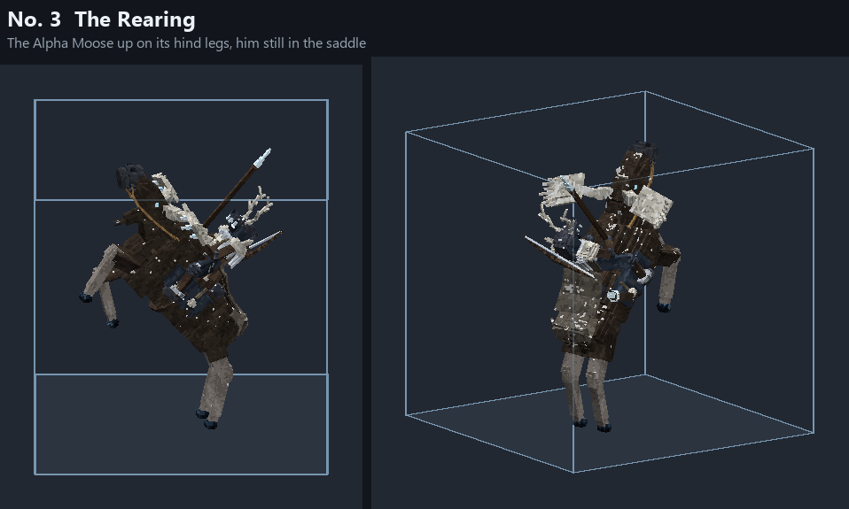
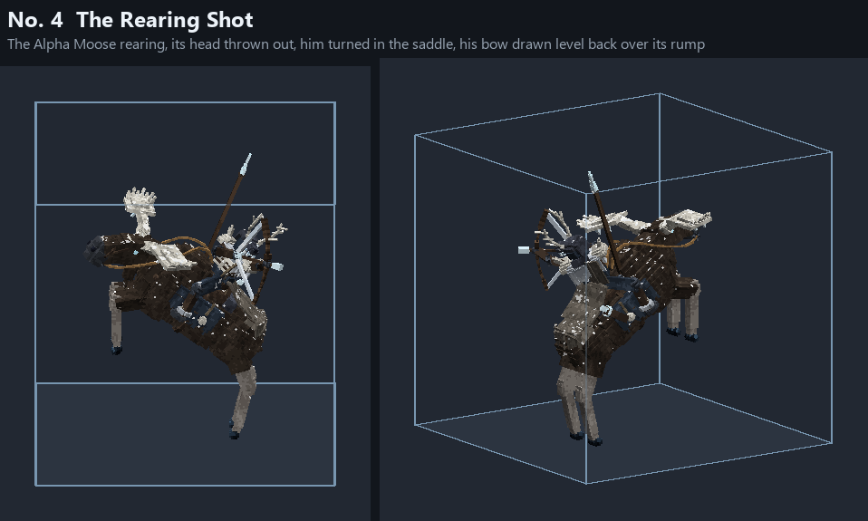
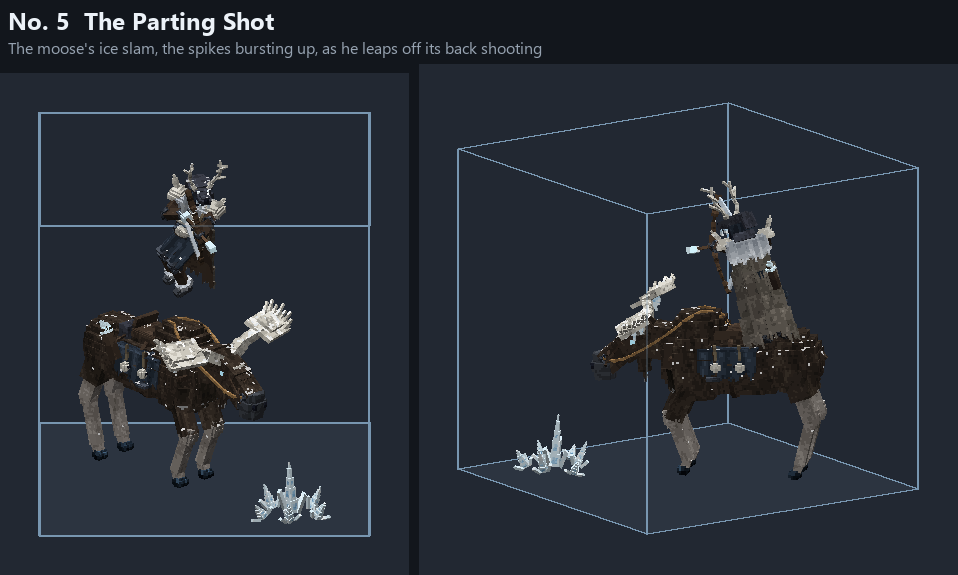

The Huntsman's trophies
The five in the game. The candidates they were picked from: candidates.
No. 1 Riding Down
His spear driven down past the antlers at a gallop

No. 2 Rain of Arrows
His bow drawn high, three arrows on the string

No. 3 The Rearing
The Alpha Moose up on its hind legs, him still in the saddle

No. 4 The Rearing Shot
The Alpha Moose rearing, its head thrown out, him turned in the saddle, his bow drawn level back over its rump

No. 5 The Parting Shot
The moose's ice slam, the spikes bursting up, as he leaps off its back shooting
